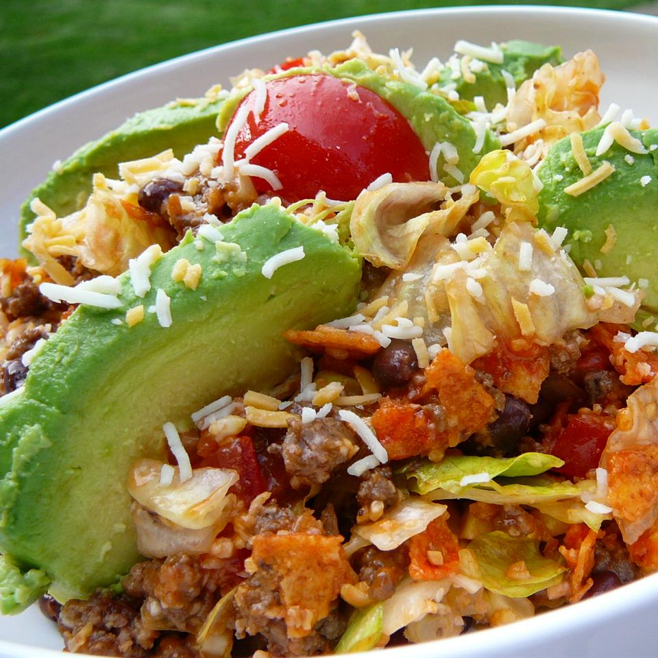

Spicy Dorito Salad

Description
A delicious and healthy, yet slightly strange sounding salad. Perfect for a warm day.
Ingredients
- 1lb Ground Beef
- 1/2 Teaspoon Garlic Powder
- 1/2 Teaspoon Chili Powder
- 1/4 Teaspoon Ground Black Pepper
- 1 Head Lettuce, Chopped
- 5 Cups Crushed Nacho Cheese-flavoured Tortilla Chips
- 2 Cups Shredded Colby-Jack Cheese
- 1 Can Dark Red Kidney Beans, Drained and Rinsed
- 1 Tomata, Diced
- 1/2 Cup Chopped Onion
- 1/4 Cup Pickled Jalapeno Peppers, Chopped
- 1 Cup Vegetable Oil
- 1/2 Cup White Sugar
- 1/2 Cup Ketchup
- 1 Envelope Taco Seasoning Mix
- 2 Tablespoons Cider Vinegar
- 1 Tablespoon Worcestershire Sauce
Instructions
- Cook ground beef, garlic powder, chili powder, and black pepper together in a skillet over medium heat until meat is brown and crumbly, about 10 minutes, breaking the meat up into chunks as it cooks. Drain excess grease, remove from heat, and let the meat cool.
- Toss lettuce, tortilla chips, Colby-Jack cheese, kidney beans, tomato, onion, and pickled jalapeno peppers in a large salad bowl; mix in the beef.
- Whisk vegetable oil, sugar, ketchup, taco seasoning, cider vinegar, and Worcestershire sauce together in a bowl until sugar has dissolved; pour dressing over the salad and toss again.
Back